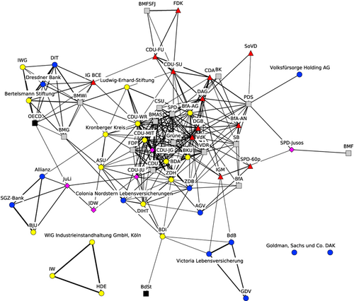
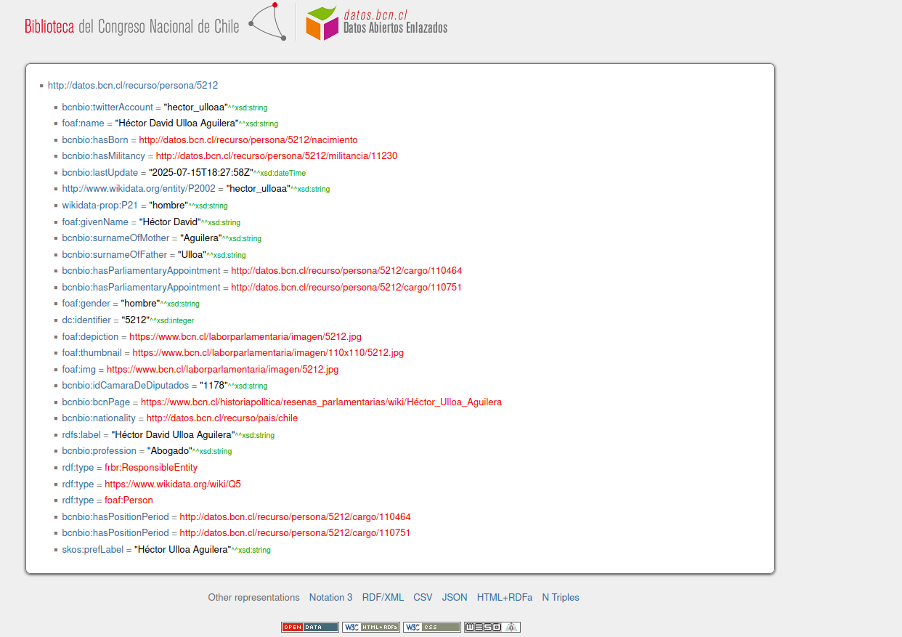

![]()
0.1 Resumen metodológico
Aunque aún no definida por completo, la metodología escogida nos otorga los supuestos relevantes para extraer y limpiar los datos de forma que sean útiles posteriormente. Tentativamente, utilizaremos Discourse Network Analysis (Leifeld, 2017), que entiende el discurso como un fenómeno de red, ya que las declaraciones de los actores son interdependientes entre sí, de forma temporal y transversal, y comúnmente están dirigidas hacia otros actores, lo que constituye una acción relacional. El DNA combina técnicas de análisis de contenido discursivo, análisis descriptivo de redes y análisis inferencial de redes para describir las estructuras de los discursos políticos y comprender sus procesos generativos. Esta técnica permite capturar la agrupación de actores (coaliciones), la agrupación temporal (ciclos de atención) y la agrupación en torno a conceptos (frames). Esto nos permitirá, entre otras cosas, evaluar el nivel de cooperación y conflicto y la polarización en el debate, entender sistemáticamente como el poder da forma al discurso, y tomar en consideración el tiempo y la competencia entre coaliciones opuestas al analizar los conceptos teóricos que nos interesan. El mayor potencial que tiene esta perspectiva para nuestra investigación es lograr transformar el debate, por naturaleza no estructurado y disperso, en contenido con estructura clara y analizable, para atacar de forma efectiva las hipótesis y preguntas que nos interesan. Sumado a esto, el DNA ofrece categorías y variables claras y delimitadas, perfectas para realizar un análisis con Inteligencia Aumentada como el que propone esta investigación.
0.1.1 Variables:
La unidad básica de análisis en el DNA es una declaración (statement). Se compone de las siguientes variables:
Actores: Organizaciones o sujetos. Deben definirse de forma clara antes de empezar a analizar. En este caso, utilizaremos a los sujetos, añadiendo la organización (comúnmente el partido) como una categoría adicional de análisis a posteriori.
Conceptos: puede ser tanto afirmaciones sobre políticas (desde la perspectiva de las advocacy coalitions) o justificaciones/narrativas (desde la perspectiva de las discourse coalitions). Para nuestra investigación, probablemente utilizaremos discourse coalitions, pero es algo que queda por definir y requiere de una teoría auxiliar para ser operacionalizado.
Acuerdo: Relación de acuerdo entre el actor y el concepto. Es un calificador dicotómico, tomando valor 1 si el actor se refiere al concepto de forma afirmatoria, y 2 si el actor rechaza el concepto o usa una connotación negativa. Es una distinción crucial, ya que los actores usualmente discuten los mismos conceptos, pero con un posicionamiento diferente o muchas veces opuesto. Metodologías como el análisis de tópicos no serían capaces de capturar esta complejidad.
Tiempo: El momento en que la declaración se emite. Por el momento, la estamos operacionalizando de dos formas:
Utilizamos el día de la discusión para temporalizar cada debate entre sí.
Utilizamos un time step discreto interno a cada debate, para capturar posibles influencias entre actores o referencias a otras declaraciones (t=1, t=2, …, t=n).
0.1.2 Ejemplo de codificación
Existen métodos inferenciales que aún no he explorado (y pueden llegar a influenciar el procedimiento), pero por el momento esta sería la forma más básica de codificación:
Actor -> acuerdo -> concepto (en un time step específico)
Para nuestro caso podría ser:
Johannes Kayser -> Desacuerdo -> Solidaridad Intergeneracional
O también:
Johannes Kayser -> Acuerdo -> Estado ineficiente
Una posibilidad es construir diccionarios de conceptos análogos a nuestras categorías teóricas, como en este ejemplo muy simplificado:
Esta es una forma muy simplificada (y por desarrollarse), ya que en realidad debería ser más parecido a esto:
En último término, esto permite construir grafos y analizar el dinamismo de los clusters de forma descriptiva (aún sin utilizar métodos más avanzados), como en este ejemplo del análisis del discurso en torno a las pensiones en Alemania (Leifeld, 2013):

0.2 Línea de tiempo y revisión de datos ley 21.735
Se revisó la calidad de los datos extraídos (más adelante en el documento) y el contenido de cada documento, para identificar cuáles contienen información discursiva relevante para analizar y caracterizar temporalmente eventos relevantes en la historia de la ley.
0.2.1 Primer Trámite Constitucional: Cámara de Diputados (2022/11/07 - 2024/01/24)
1.1 Mensaje inicial (2022/11/07): xml y texto limpio revisados. Mensaje inicial del presidente de la república y primera versión de la ley. Relevancia alta para el análisis, especialmente el discurso inicial que contiene la justificación de la ley.
Informes asociados (2022/11/07): Informe Financiero, Informe de Sustentabilidad de los Fondos de Cesantía, Informe de Impacto Regulatorio, Informe Técnico
1.2 Oficio a la Corte Suprema (2022/11/04): xml y texto limpio revisados. Se solicita un análisis de constitucionalidad de la ley a la corte suprema, es un documento técnico, sin contenido discursivo significativo. Relevancia baja/nula para el análisis.
1.3 Oficio de la corte suprema (2023/01/11): xml y texto limpio revisados. Realiza un análisis de la constitucionalidad de la ley, pero es un documento técnico, sin contenido discursivo significativo. Relevancia baja/nula para el análisis.
Nota: entre el proyecto inicial y el trámite 1.4 hubieron modificaciones al proyecto de ley, muchas de las cuáles el presidente revierte. Hay que encontrarlas. Relevancia alta para generar línea de tiempo de cambios del proyecto.
1.4 Oficio indicaciones del ejecutivo (2023/12/21): xml y texto limpio revisados. Realiza modificaciones al proyecto realizado, principalmente intercambiando administradoras de fondos de pensiones por Inversores de Pensiones. Relevancia baja/nula para el análisis, relevancia alta para generar línea de tiempo de cambios del proyecto. Informe asociado: Informe Financiero Sustitutivo
1.5 Oficio indicaciones del ejecutivo (2024/01/09): xml y texto limpio revisados. Retira el anterior oficio de indicaciones, y añade el Sistema de Información de Pensiones, retrocediendo con muchas de las propuestas de la reforma. Relevancia baja/nula para el análisis, relevancia alta para generar línea de tiempo de cambios del proyecto. Informe asociado: Informe Financiero Complementario
1.6 Oficio indicaciones del ejecutivo (2024/01/10): xml y texto limpio revisados. Retira y formula indicaciones al proyecto de ley (principalmente establece por ley una Comisión de Usuarios del Sistema de Pensiones). Relevancia baja/nula para el análisis, relevancia alta para generar línea de tiempo de cambios del proyecto. Informe asociado: Informe Financiero Complementario
1.7 Informe de Comisión de Trabajo Cámara de Diputados (2024/01/15): xml y texto limpio revisados. Contiene un resumen de las sesiones, los asistentes a ellas, mucha información técnica, y los resultados del informe (votaciones, cambios al proyecto), pero no aporta contenido discursivo significativo. Relevancia baja/nula para el análisis, relevancia alta para el procesamiento de los videos de sesiones, relevancia alta para generar línea de tiempo de cambios del proyecto.
Nota: Hay que encontrar (y transcribir) los videos de las sesiones de esta comisión y las siguientes. Las actas existentes están neutralizadas y no mantienen bien la dirección y tono de los statements.
1.8 Oficio indicaciones del ejecutivo (2024/01/15): xml y texto limpio revisados. Retira y formula indicaciones al proyecto de ley. Establece la cotización adicional del 6% entre 3% a las cuentas individuales y otro 3% a solidaridad intergeneracional. Relevancia baja/nula para el análisis, relevancia alta para generar línea de tiempo de cambios del proyecto. Informe asociado: Informe Financiero Complementario
1.9 Oficio indicaciones del ejecutivo (2024/01/19): xml y texto limpio revisados. Retira y formula indicaciones al proyecto de ley (principalmente en aplica un incremento gradual al aumento de la PGU). Relevancia baja/nula para el análisis, relevancia alta para generar línea de tiempo de cambios del proyecto. Informe asociado: Informe Financiero Complementario
1.10 Informe de Comisión de Hacienda Cámara de Diputados (2024/01/22): xml y texto limpio revisados. Contiene un resumen de las sesiones, los asistentes a ellas, mucha información técnica, y los resultados del informe (votaciones, cambios al proyecto), pero no aporta contenido discursivo significativo. Relevancia baja/nula para el análisis, relevancia alta para el procesamiento de los videos de sesiones.
1.11 Oficio indicaciones del ejecutivo (2024/01/22): xml y texto limpio revisados. Retira y formula indicaciones al proyecto de ley (principalmente, establece límites a las comisiones). Relevancia baja/nula para el análisis, relevancia alta para generar línea de tiempo de cambios del proyecto. Informe asociado: Informe Financiero Complementario
1.12 Discusión en Sala (2024/01/23): xml y texto limpio revisados. Contiene el discurso de los parlamentarios en la discusión en sala, con un alto contenido discursivo significativo. Relevancia alta para el análisis.
1.13 Discusión en Sala (2024/01/24): xml y texto limpio revisados. Contiene el discurso de los parlamentarios en la discusión en sala, con un alto contenido discursivo significativo. Relevancia alta para el análisis.
Nota: Acá se rechazó el artículo 2, que establecía el 6 % (no sé exactamente qué proporción)
- 1.14 Oficio de Cámara Origen a Cámara Revisora (2024/01/24): xml y texto limpio revisados. Entrega del proyecto de ley aprobado luego de las discusiones y comisiones técnicas al Senado. Relevancia baja/nula para el análisis, relevancia alta para generar línea de tiempo de cambios del proyecto.
0.2.2 Segundo trámite constitucional: Senado (2025/01/22 - 2025/01/29)
p. 293-468 requerimiento de inconstitucionalidad: - 15 de enero de 2025: Se recibió el Oficio N° 312-372 del Presidente de la República, que formuló 176 páginas de indicaciones al proyecto.
2.1 Informe de Comisión de Trabajo Senado (2025/01/22): xml y texto limpio revisados. Contiene un resumen de las sesiones, los asistentes a ellas, mucha información técnica, y los resultados del informe (votaciones, cambios al proyecto), pero no aporta contenido discursivo significativo. Relevancia baja/nula para el análisis, relevancia alta para el procesamiento de los videos de sesiones, relevancia alta para generar línea de tiempo de cambios del proyecto.
2.2 Informe de Comisión de Hacienda Senado (2025/01/26): xml y texto limpio revisados. Contiene un resumen de las sesiones, los asistentes a ellas, mucha información técnica, y los resultados del informe (votaciones, cambios al proyecto), pero no aporta contenido discursivo significativo. Relevancia baja/nula para el análisis, relevancia alta para el procesamiento de los videos de sesiones, relevancia alta para generar línea de tiempo de cambios del proyecto.
2.3 Oficio a la Corte Suprema (2025/01/26): xml y texto limpio revisados. Se solicita un análisis de constitucionalidad de la ley a la corte suprema, es un documento técnico, sin contenido discursivo significativo. Relevancia baja/nula para el análisis.
2.4 Discusión en Sala (2025/01/27): xml y texto limpio revisados. Contiene el discurso de los parlamentarios en la discusión en sala, con un alto contenido discursivo significativo. Relevancia alta para el análisis.
2.5 Oficio de Cámara Revisora a Cámara Origen (2025/01/28): xml y texto limpio revisados. Aprobación con modificaciones, reporta los cambios realizados al proyecto presentado por la Cámara de Diputados. Relevancia baja/nula para el análisis, relevancia alta para generar línea de tiempo de cambios del proyecto.
2.6 Oficio de la Corte Suprema a la Comisión (2025/01/29): xml y texto limpio revisados. Realiza un análisis de la constitucionalidad de la ley, principalmente las últimas modificaciones realizadas en respuesta al último informe de la corte suprema. Relevancia baja/nula para el análisis.
0.2.3 Tercer trámite constitucional: Cámara de Diputados (2025/01/29 - 2025/01/29)
3.1 Discusión en Sala (2025/01/29): xml y texto limpio revisados (xml Akoma Ntoso buggeado). Contiene el discurso de los parlamentarios en la discusión en sala, con un alto contenido discursivo significativo. Discusión donde se revisan y discuten los cambios realizados por el Senado y el proyecto final para aprobarlo de forma definitiva. Relevancia alta para el análisis.
3.2 Oficio de Cámara Revisora a Cámara Origen (2025/01/29): xml y texto limpio revisados. Aprobación de modificaciones realizadas por el Senado. Relevancia baja/nula para el análisis, relevancia alta para generar línea de tiempo de cambios del proyecto.
0.2.4 Cuarto trámite constitucional: Tribunal Constitucional (2025/01/29 - 2025/03/07)
- 4.1 Oficio de Cámara de Origen al Ejecutivo (2025/01/29): xml y texto limpio revisados. Envío del proyecto de ley aprobado por ambas cámaras al ejecutivo para su promulgación, consulta de facultad de veto. Relevancia baja/nula para el análisis, relevancia alta para generar línea de tiempo de cambios del proyecto.
Oficio N° 018-372 (presidente no ejerce facultad de veto).
4.2 Oficio al Tribunal Constitucional (2025/01/30): xml y texto limpio revisados. Envío del proyecto de ley al Tribunal Constitucional para examen constitucional, presidente no hizo uso de su facultad de veto. Relevancia baja/nula para el análisis.
4.3 Oficio al Tribunal Constitucional (2025/02/10): xml y texto limpio revisados. Requerimiento de inconstitucionalidad de artículos por incumplimiento. Relevancia baja/nula para el análisis, relevancia alta para generar línea de tiempo de cambios del proyecto.
Requerimiento de inconstitucionalidad. Relevante para el análisis y para la línea de tiempo. Se declara que indicaciones del presidente van en contra de objetivos del proyecto (refuerzo de la libertad de elección, disminución del riesgo individual y eficiencia del sistema) y se realizaron muy pronto a la finalización de la tramitación. Se declara que la cámara baja tuvo tiempo insuficiente para analizar el proyecto, ya que el tercer trámite constitucional duró menos de 24 horas y no se realizaron sesiones de comisión técnica. Principalmente el capítulo 1 tiene mucho contenido discursivo, en adelante es justificación técnica de la inconstitucionalidad. **Firmado por el diputado Roberto Arrroyo Muñoz.
La inconstitucionalidad fue solicitada también por más de un cuarto de los diputados: Roberto Arroyo Muñoz, Yovana Ahumada Palma, René Alinco Bustos, Jaime Araya Guerrero, Cristián Araya Lerdo de Tejada, Chiara Barchiesi Chávez, Bernardo Berger Fett, Sergio Bobadilla Muñoz, Álvaro Carter Fernández, Sofía Cid Versalovic, Sara Concha Smith, Gonzalo De la Carrera Correa, Catalina Del Real Mihovilovic, Jorge Durán Espinoza, Camila Flores Oporto, Mauro González Villarroel, Juan Irarrázaval Rossel, Pamela Jiles Moreno, Harry Jürgensen Rundshagen, Johannes Kaiser Barents-Von Hohenhagen, Cristian Labbé Martínez, Enrique Lee Flores, Christian Matheson Villán, José Carlos Meza Pereira, Benjamín Moreno Bascur, Francesca Muñoz González, Gloria Naveillan Arriagada, Víctor Alejandro Pino Fuentes, Jorge Rathgeb Schifferli, Gaspar Rivas Sánchez, Agustín Romero Leiva, Leonidas Romero Sáez, Luis Sánchez Ossa, Stephan Schubert Rubio, Hotuiti Teao Drago, Renzo Trisotti Martínez, Cristóbal Urruticoechea Ríos y Sebastián Videla Castillo.
Nota: Para esta fecha ya estaba el 1.5% hacia el fondo solidario y el “préstamo” al Estado. Hay que identificar específicamente cuando se ingresó esta medida.
4.4 Oficio del Tribunal Constitucional (2025/03/03): xml y texto limpio revisados. Sentencia de Requerimiento de Inconstitucionalidad, lo declara inadmisible. Relevancia baja/nula para el análisis, relevancia alta para generar línea de tiempo de cambios del proyecto.
4.5 Oficio del Tribunal Constitucional (2025/03/07): xml y texto limpio revisados. Sentenceia del Tribunal Constitucional. Declara constitucional todo lo consultado. Relevancia baja/nula para el análisis, relevancia alta para generar línea de tiempo de cambios del proyecto.
0.2.5 Quinto trámite constitucional: Trámite de Finalización, Cámara de Diputados (2025/03/11 - 2025/03/11)
- 5.1 Oficio de Cámara de Origen al Ejecutivo (2025/03/11): xml y texto limpio revisados. Envío del proyecto finalizado para firma del presidente. Relevancia baja/nula para el análisis, relevancia alta para generar línea de tiempo de cambios del proyecto.
0.2.6 Sexto trámite constitucional: Promulgación de Ley en Diaro Oficial (2025/03/20 - 2025/03/20)
- 6.1 Publicación en Diario Oficial (2025/03/20): xml y texto limpio revisados. Publicación de la ley en el diario oficial, con el texto final aprobado por el Tribunal Constitucional. Relevancia baja/nula para el análisis, relevancia alta para generar línea de tiempo de cambios del proyecto.
0.3 Procesamiento de datos
Todas las rutas del procesamiento se definen según su función. Los insumos originales permanecen en data/raw_data, las tablas intermedias y analíticas en data/proc_data, y los reportes tabulares legibles en output/tables.
0.3.1 Descarga de datos
Utilizamos el paquete de python bcn_scraper de desarrollo propio para descargar de forma automatizada los datos tramitación de la ley 21.735, y procesar los datos para obtener el discurso de forma limpia, normalizada y enriquecida. En primer lugar, descargamos todos los datos de la tramitación ingresando el número de ley. La función nos otorga un dataframe con todos los documentos de cada trámite y metadatos como la fecha, número de trámite y URL de cada documento. Este bloque de código demora un tiempo considerable, ya que se descargan los documentos y el Akoma Ntoso (AKN) de cada trámite, y se procesan para obtener el texto limpio. Específicamente para el AKN, se requirió desarrollar una función para reintentar la descarga con un mayor tiempo de espera, ya que solían presentar errores.
La descarga anterior se ejecuta solo cuando es necesario refrescar la fuente. El resto del reporte utiliza el CSV persistido, por lo que no vuelve a consultar BCN en cada render.
0.3.2 Filtrado de trámites irrelevantes
Para el análisis final se mantiene un manifiesto explícito con las cuatro discusiones en Sala y, por separado, el mensaje inicial. Los informes y oficios no entran a la pipeline discursiva. Esto evita que una búsqueda amplia por palabras en el título cambie accidentalmente el corpus.
0.3.3 Extracción y normalización de datos discursivos
Extraemos el discurso desde los diarios de sesión, dividido por párrafo y separado por hablante. Los datos ya están en su gran mayoría etiquetados, ya que estamos utilizando los identificadores de hablantes y tipos de intervenciones presentes en el Akoma Ntoso (AKN) de la Biblioteca del Congreso Nacional. Para esto, utilizamos la función add_speech_content.
A continuación, se muestra un ejemplo de un documento AKN que fue procesado:
<!-- Metadata al principio documento con id del diputado. Luego nos será de gran utilidad. -->
<meta>
<references source="#org149">
<TLCPerson id="per67" showAs="hector ulloa aguilera" href="http://datos.bcn.cl/recurso/persona/5212"/>
<references</>
<meta/>
<!-- Una participación al azar como ejemplo -->
<debateSection name="Participacion" refersTo="#per67" id="akn704142-po1-ds3-ds10" bcn:uriTipoParticipacion="#Intervencion" bcn:uriRol="#editorIdDiputado">
<p id="akn704142-po1-ds3-ds10-p392">La señora HERTZ, doña Carmen (Vicepresidenta).-</p>
<p id="akn704142-po1-ds3-ds10-p393"/>
<p id="akn704142-po1-ds3-ds10-p394"> Tiene la palabra el diputado Héctor Ulloa . </p>
<p id="akn704142-po1-ds3-ds10-p395"/>
<p id="akn704142-po1-ds3-ds10-p396">El señor ULLOA.-</p>
<p id="akn704142-po1-ds3-ds10-p397"/>
<p id="akn704142-po1-ds3-ds10-p398">
Señora Presidenta, llevamos años de rotundos fracasos en materia previsional, y este es el tercer intento de tener un mínimo común para avanzar en pensiones dignas para nuestros adultos mayores.
</p>
<!-- ... -->
<p id="akn704142-po1-ds3-ds10-p407">
Por eso, estimados colegas, hoy hago un llamado a la empatía. Muy pronto veremos el debate de las isapres. Hoy nos dicen “Con tu platita, no”; pero las isapres dicen “Con tu platita, sí”. Por eso hago un llamado a la empatía. Somos cotizantes privilegiados dentro del sistema, pero la realidad…
</p>
<p id="akn704142-po1-ds3-ds10-p408">-Aplausos.</p>
<p id="akn704142-po1-ds3-ds10-p409"/>
</debateSection>Sin embargo, parte del discurso no está etiquetado, principalmente el discurso de los ministros, que no son parlamentarios, y por lo tanto no cuentan con identificador ni etiquetas en el Akoma Ntoso. Para esto, se realizó un proceso de normalización del discurso, donde se identifican los fragmentos de texto no etiquetados, y se genera la misma estructura presente en las demás intervenciones. Además, se identificaron eventos como los preámbulos (cuando se le da la palabra al hablante) y los eventos como aplausos o manifestaciones de las tribunas, etiquetandolos y dividiendolos de la intervención. Se utiliza la función normalize_speech_content.
Hay intervenciones que no están etiquetadas, especialmente las de hablantes no pertenecientes al congreso (ministros, secretario general) y también intervenciones extra oficiales, como las interrupciones que suceden mucho a lo largo de las sesiones. Para diagnosticar esto, generamos la función collect_unlabeled_speaker_candidates, y permitimos un nuevo parámetro dentro de normalize_speech_content para entregar un diccionario. Este último puede contener tanto datos manualmente ingresados como los ids de los parlamentarios para realizar un matching automático.
El resumen distingue candidatos resueltos mediante el diccionario o los metadatos AKN, candidatos reconocidos solo por la expresión regular y casos todavía no resueltos o conflictivos. Los dos Parquet conservan el detalle completo y los pendientes de cada ejecución.
Así quedan los datos (simplificados) luego de normalizarlos, con el ejemplo de la intervención de Jeanette Jara que no estaba etiquetada en el AKN:
0.4 Extracción de datos de parlamentarios
Luego, se extrayeron los datos relevantes de los parlamentarios, estructurándolos en un dataframe. Se tomaron dos estrategias:
Para los parlamentarios etiquetados en el AKN, se obtuvieron los datos desde la misma plataforma.
Los actores externos se mantienen en un registro manual con una URL de referencia. El enriquecimiento automático implementado actualmente cubre solo recursos de personas de BCN; no extrae datos desde Wikipedia.
BCN tiene una gran base de datos no estructurada. Una página de parlamentario se ve asi. Tomamos el mismo ejemplo que se mostró más arriba:

Se accedió al formato JSON de esta misma plataforma, extrayendo todos los datos relevantes, como el género, el partido y la edad. En algunos casos, como en el del partido, fue necesario acceder a dos URL adicionales luego de esta. El siguiente bloque de código puede demorar mucho tiempo (~30 minutos). Solo se extrayó la última militancia de cada parlamentario por el largo tiempo de espera.0.5 Dataframe consolidado
Por último, aplanamos el corpus en una fila por unidad ordenada. La tabla analítica conserva tanto las intervenciones como los eventos de transcripción (aplausos, manifestaciones, interrupciones colectivas, etc.); excluye únicamente preámbulos, texto no resuelto y la fase Votacion de 3.1.
speaker_id es el identificador canónico: PersonaBCN<id> para recursos de personas BCN y PersonaExt<n> para actores externos que no tienen un recurso BCN conocido. speaker_bcn_id conserva además el número puro de BCN; speaker_local_id guarda el identificador de la aparición actual y speaker_local_ids reúne todos los IDs locales observados. Como un perN puede pertenecer a personas distintas en documentos diferentes, speaker_local_refs agrega siempre el document_uri y es la procedencia no ambigua.
utterance_id identifica de manera determinística cada unidad a partir del documento y su ruta estructural, mientras utterance_order reconstruye el orden completo del debate. Los eventos tienen ambos campos, aunque correctamente no tienen hablante. Los estados pass no presentan errores en estas invariantes principales. En el fallback, el reporte exige contenido en Discusion, conserva Votacion en la salida completa y comprueba que esa fase no pase al corpus analítico. warning mantiene visible contenido que requiere revisión —actualmente solo el cierre procedimental de 2.4— sin confundirlo con un fallo silencioso. Los registros identity_only conservan nombre e ID estable entre refrescos; sus atributos biográficos se completan al volver a ejecutar el bloque lento de parlamentarios.